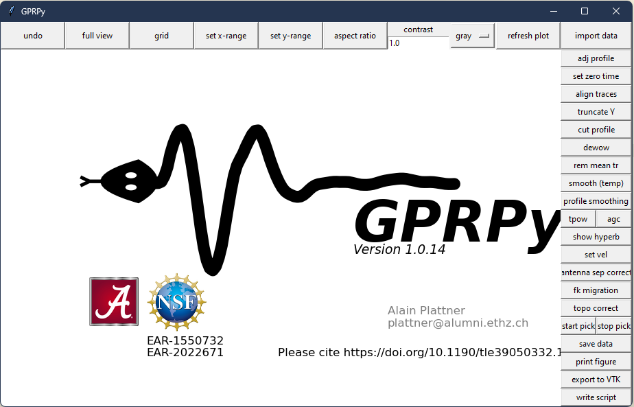

Mi experiencia con GitHub Copilot: ¿Revolución en la programación o solo un asistente más?
Desde que GitHub Copilot se volvió gratuito para estudiantes y algunos desarrolladores, no dudé en probarlo con más frecuencia. Después de unos meses de uso intensivo, decidí pagar la suscripción para sacarle aún más provecho y ver hasta dónde podía llegar con esta herramienta.
Leer más

Explorando Geolitix: Mi Experiencia con una Herramienta de Procesamiento Geofísico
Como profesional en el campo de la geofísica, siempre busco herramientas que hagan mi trabajo más eficiente y preciso. En mi reciente experiencia con Geolitix, descubrí una solución robusta que simplifica de manera sorprendente el procesamiento e interpretación de datos.
Leer más

Mi experiencia usando GPRPy: una herramienta poderosa para el procesamiento de datos GPR
Procesar más de 6 kilómetros de datos de GPR sin licencias de software especializado fue un reto. GPRPy, un software basado en Python, se convirtió en mi solución ideal para este desafío.
Leer más

La filosofía del software libre: un movimiento de tecnología y principios
En un mundo donde la tecnología desempeña un papel crucial, el software libre surge como una alternativa ética y colaborativa. Exploramos sus principios y su impacto en la sociedad.
Leer más